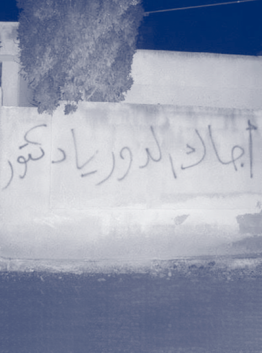

Hamza Al Khateeb's Story
The price of speaking up
On 29 April 2011 a brave 13-year-old-boy called
Hamza Al-Khateeb went to a protest with his
parents a!er his friends were arrested and
tortured for writing an antigovernment slogan
on their school wall.
1
Read more
pictured
Curious kids raise their hands in a classroom in
Syria before the war
Hamza got kidnapped at the protest.
A month later his disfigured body was
returned to his family.
2
He had been severely tortured by the Syrian Regime’s
forces
3
, his only crime was speaking up for
his friends.
Hamza’s death, and his friends’ arrest,
both sparked mass protests across Syria
which led to the start of the country’s
bloody conflict.
4
pictured
The ‘incriminating’ slogan graffitied onto another
school wall in Syria a"er the protest

Our Story
The Violation Documentation Centre
The Violation Documentation Center (VDC) is an
independent, non-governmental organization
that was established in April 2011.
Read more
pictured
As part of the campaign by the VDC, walls are painted around Duma to promote the importance of monitoring and reporting violations
Hamza got kidnapped at the protest.
A month later his disfigured body was
returned to his family.
2
He had been severely tortured by the Syrian Regime’s
forces
3
, his only crime was speaking up for
his friends.
Hamza’s death, and his friends’ arrest,
both sparked mass protests across Syria
which led to the start of the country’s
bloody conflict.
4
pictured
The ‘incriminating’ slogan graffitied onto another
school wall in Syria a"er the protest